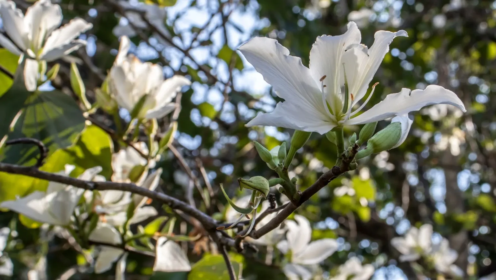
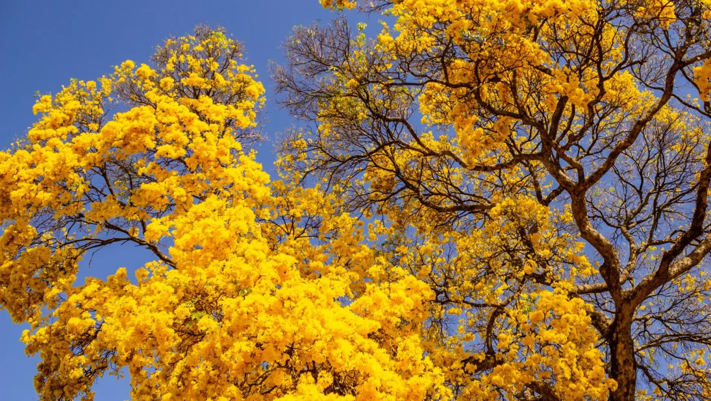
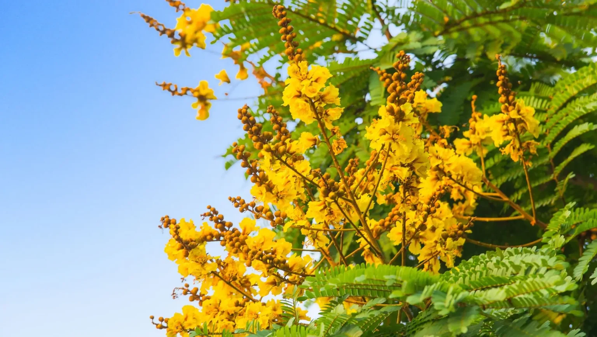
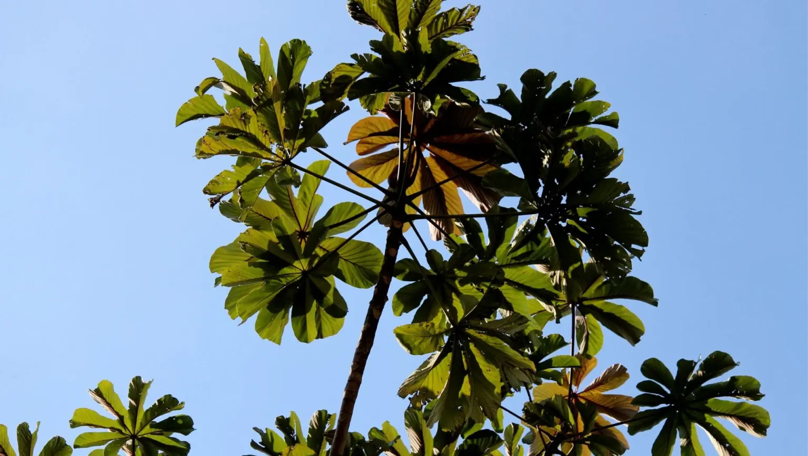
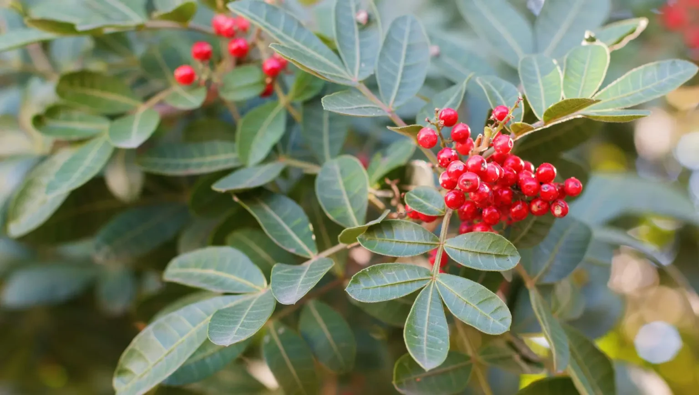
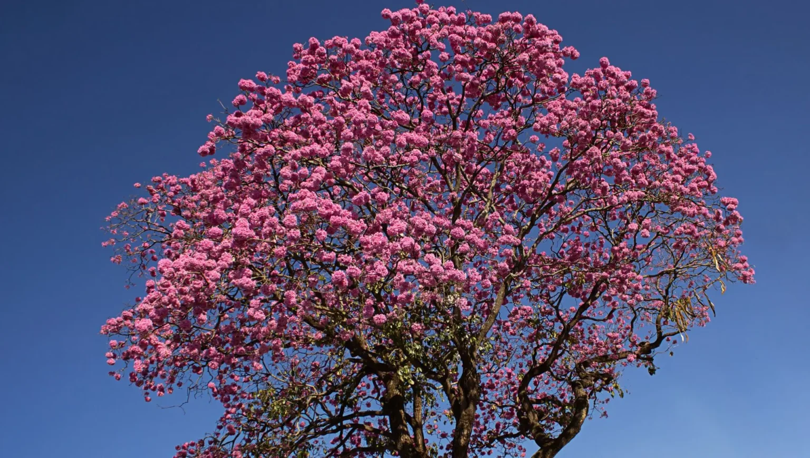

Sobre a E-Floresta


A E-Floresta oferece uma experiência única de conexão com a natureza. Aqui, você pode escolher uma espécie nativa da Mata Atlântica para ser plantada em áreas de reflorestamento cuidadosamente selecionadas. Ao adquirir uma muda, nossa equipe planta a espécie escolhida, nomeia-a com o seu nome, e acompanha o crescimento até garantir que ela se estabeleceu com sucesso.
Você recebe fotos personalizadas da muda plantada e suas coordenadas geográficas, permitindo acompanhar de perto o impacto direto da sua contribuição no reflorestamento.
Além disso, a E-Floresta também trabalha com a venda de créditos de carbono, provenientes de áreas florestadas que são preservadas e mantidas intactas, ajudando a combater as mudanças climáticas e promovendo a sustentabilidade
Reflorestar é mais que plantar, é transformar o futuro.
Plante uma Árvore

Saiba mais sobre a Pata de vaca (Bauhinia forficata)
A pata-de-vaca (Bauhinia forficata) é uma árvore da Mata Atlântica e de outros biomas, encontrada na Argentina, Brasil (Ceará, Bahia, Minas Gerais, Rio de Janeiro, São Paulo, Paraná, Santa Catarina e Rio Grande do Sul), Uruguai, Paraguai, Peru e Bolívia.
Devido à morfologia de suas folhas, semelhante ao formato das patas de bovídeos, a Bauhinia forficata é chamada vulgarmente de pata-de-vaca, casco-de-vaca, pata-de-boi, pata-de-vaca-branca, unha-de-boi e unha-de-vaca. Também é conhecida popularmente como miroró, mororó e mororó-de-espinho.
Trata-se de uma planta leguminosa de porte arbóreo e viés perene, a qual alcança até 8 m de altura.

Saiba mais sobre o Ipê Amarelo (Androantus albus)
O ipê-amarelo, também conhecido no Brasil como aipê, ipê-branco, ipê-mamono, ipê-mandioca, ipê-ouro, ipê-pardo, ipê-vacariano, ipê-tabaco, ipê-do-cerrado, ipê-dourado, ipê-da-serra, ipezeiro, pau-d’arco-amarelo, taipoca ou apenas ipê é uma árvore do gênero Handroanthus. Pode atingir 30 metros de altura e 60 centímetros de diâmetro, e é caducifólia. A floração amarela inicia no final de agosto, a espécie é hermafrodita, a frutificação ocorre entre setembro e fevereiro, dependendo da região, árvores cultivadas começam a se reproduzir com três anos. O nome específico "albus" decorre do aspecto esbranquiçado que as folhas jovens apresentam.
Plante uma muda!
Saiba mais sobre a Sibipiruna (Caesalpinia pluviosa)
A sibipiruna é uma árvore semidecídua, de rápido crescimento e florescimento ornamental. Nativada mata atlântica, ela é uma espécie pioneira ou secundária inicial, ou seja é uma das primeiras espécies a surgir em uma área degradada. Seu porte é alto, podendo atingir de 8 a 25 m de altura. O tronco é cinzento e se torna escamoso com o tempo, seu diâmetro é de 30 a 40 cm. A copa é arredondada, ampla, com cerca de 15 m de diâmetro. Suas folhas são compostas, bipinadas, com folíolos elípticos e verdes. No inverno ocorre uma queda quase total das folhas, que voltam a brotar na primavera. Devido às semelhanças físicas é por vezes confundida com o pau-ferro e com o pau-brasil.
Plante uma muda!
Saiba mais sobre a Embaúba (Cecropia pachystachya)
As embaúbas são leves, pouco exigentes quanto a solo e muito comuns em áreas desmatadas em recuperação. Possuem frutos atrativos a várias espécies de aves. São capazes de se dispersarem rapidamente. Como possuem caule e ramos ocos, vivem em simbiose com formigas, especialmente as do gênero Azteca, que habitam o seu interior e que as protegem de animais herbívoros - daí os nomes castelhanos para a planta: hormigo ou hormiguillo, numa referência a hormiga ("formiga"). Os indígenas utilizavam a madeira da raiz para fazer fogo por fricção com outra madeira dura.Dentre as espécies encontradas no Brasil destaca-se a Cecropia pachystachya, pela maior distribuição.
Plante uma muda!
Saiba mais sobre a Aroeira (Schinus terebenthifolia)
A aroeira-vermelha é um arbusto ou pequena árvore extensa, com sistema radicular raso, atingindo altura de sete a dez metros. Os galhos podem ser eretos, reclinados ou quase como videiras, todos na mesma planta. Sua morfologia plástica permite que prospere em todos os tipos de ecossistemas: de dunas a pântanos, onde cresce como planta semiaquática. A espécie é generalista quanto aos polinizadores, possuindo vasta gama de vetores de pólen, sendo em geral polinizada efetivamente por algumas espécies de abelhas e vespas e potencialmente por diversos outros insetos.Em seu habitat nativo é uma flor melífera e é a principal fonte de alimento à abelha sem ferrão.
Plante uma muda!
Saiba mais sobre o Ipê Rosa (Handroanthus heptaphyllus)
O ipê-rosa (Handroanthus heptaphyllus (Vell.) Mattos) é uma árvore sul-americana da família das Bignoniaceae. Há vários Handroanthus conhecidos como ipê-rosa. De crescimento rápido em regiões livres de geada (em dois anos ela atinge 3,5 metros), pode atingir até 35 m. Floresce abundantemente de junho a agosto, e prefere climas mais quentes, porém num inverno seco e ameno, ela oferece também uma abundante florada no início da primavera. Ideal para áreas isoladas, ou paisagismo de grandes avenidas, o ipê-rosa prefere solos férteis e bem drenados. É largamente empregada no paisagismo em geral por apresentar belíssimas inflorescências de cor rosa.
Plante uma muda!